不安と彷徨いを乗り越えて、自分を探す糸
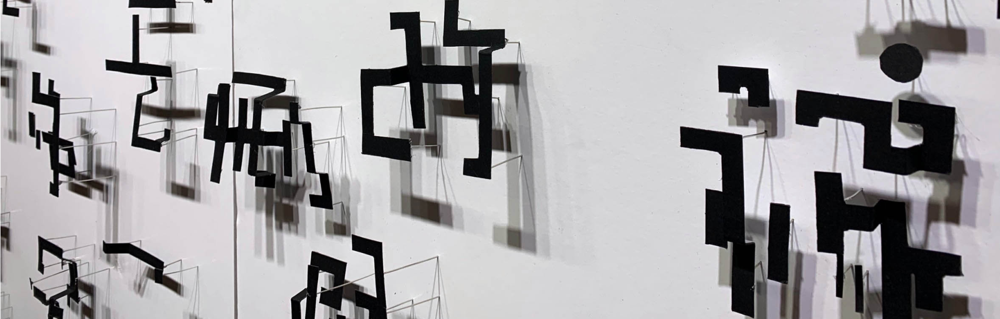
脳内消しゴム
タイポグラフィー / 手工作業
2023 / スチレンボード,大頭釘,紙
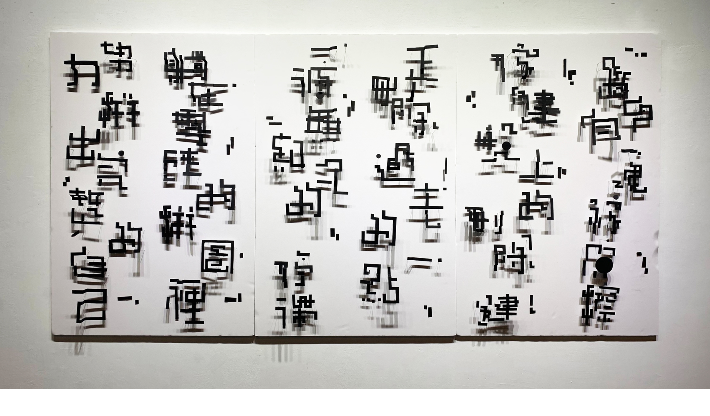
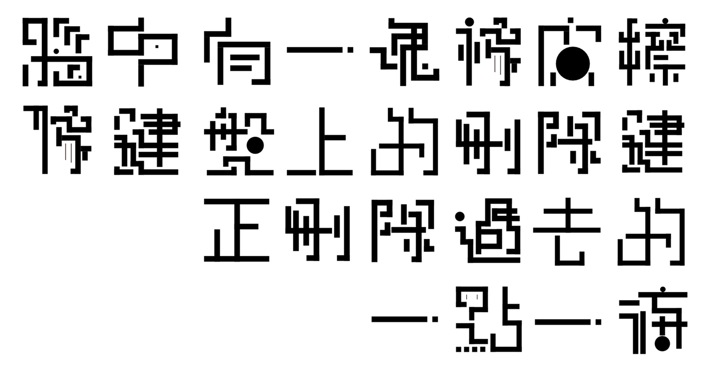
頭の中に消しゴムがあって、キーボードの削除キーのように、一個一個、数えきれない過去の停滞を取り消し中
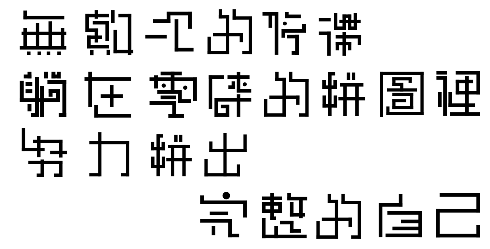
散らかったパズルの中に寝転んで、完全の自分を組み立ててみる
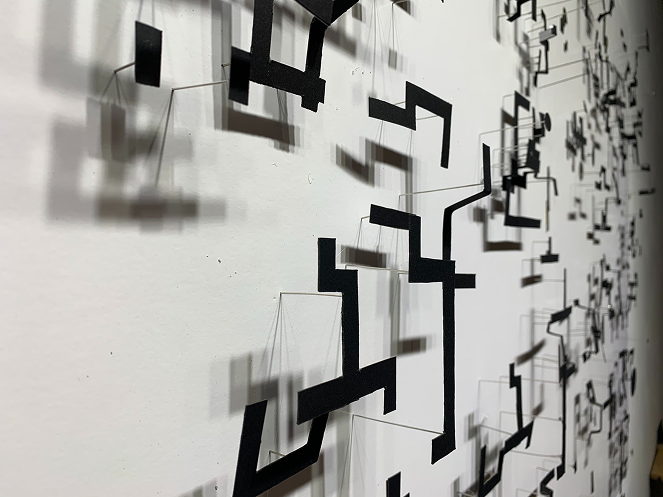
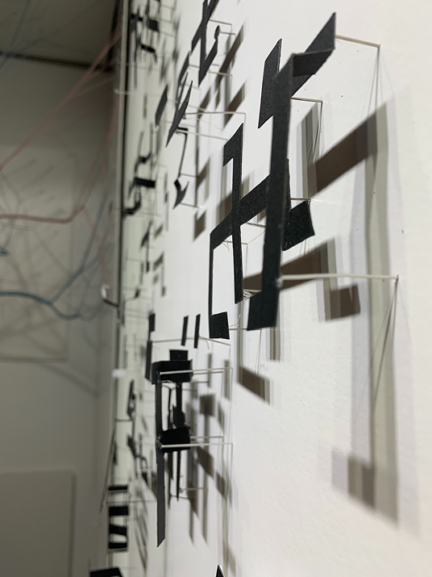
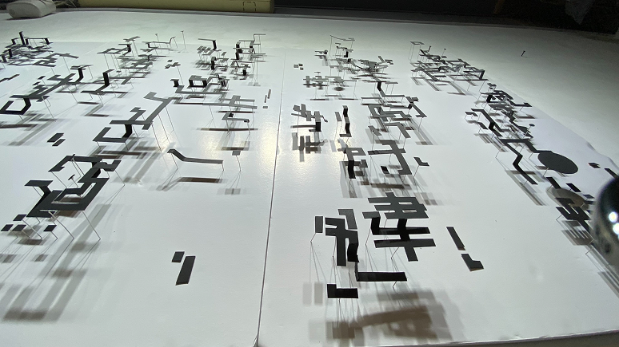
腦中/脳内
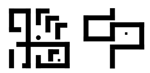
立体化後の影を明確して可視度よりアップするよう、文字作り際に主なコンセプトは円角を使わずに構造的に方形や直線を使用した。方格で仕上げた文字は少し機械感が出て、詩の中に”アイデンティティ不明”のイメージも合わせました。
鍵盤/キーボード
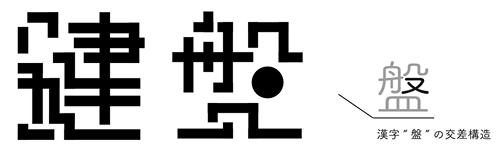
やや機械感を持つ文字をするけど、距離感を取りすぎないように、小さい方形や円など装飾的な要素も使われている。当作字作品には、”X”のような交差構造に円形を変えることもある。
無數次/数え切れない
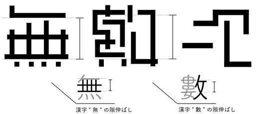
文字構成上はなるべく複雑な部分を簡単化した。主な調整は筆順統合で筆順が多い部分をきれいにした。それに、筆順間の隙を伸ばして、文字全体的な重さを一致する。
文字の立体化
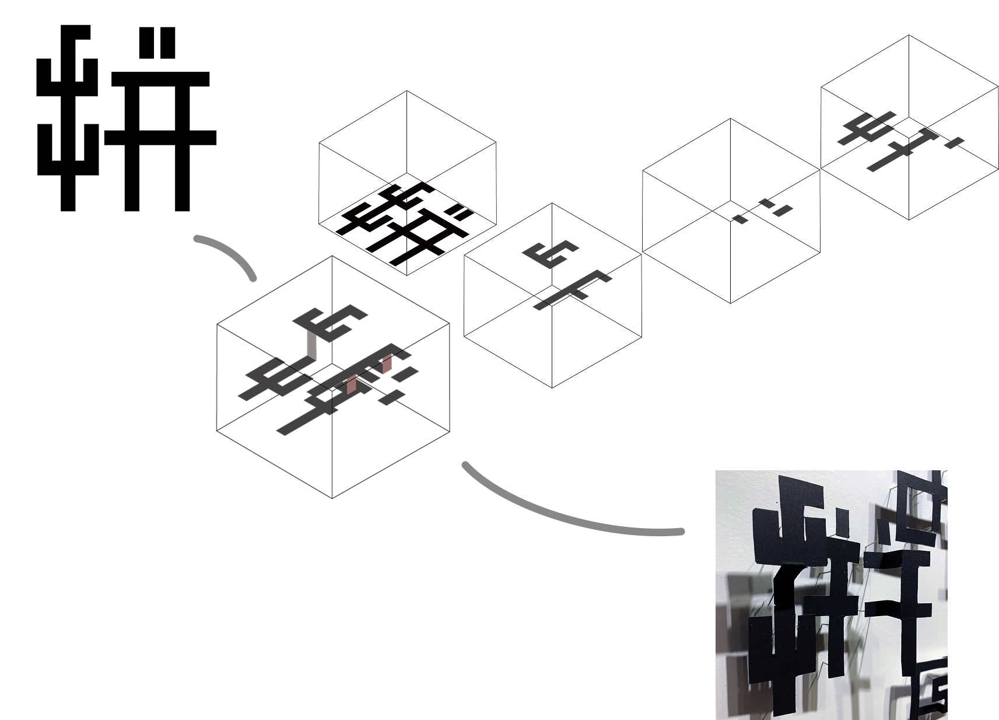
立体化とするのは、文字の影刺しが背景の白いスチレンボートに。その上、影の変化を表現したいので基本３種類の高さを分け、紙折で高度差をつける。タイポグラフィの作業が終わってから、文字を実体して、実際に文字を折りながら形が崩れないように立体模様を確定しようとした。
最上層
中間層
最下層
実作物
LET'S SEE MORE!